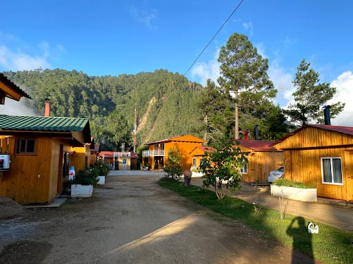
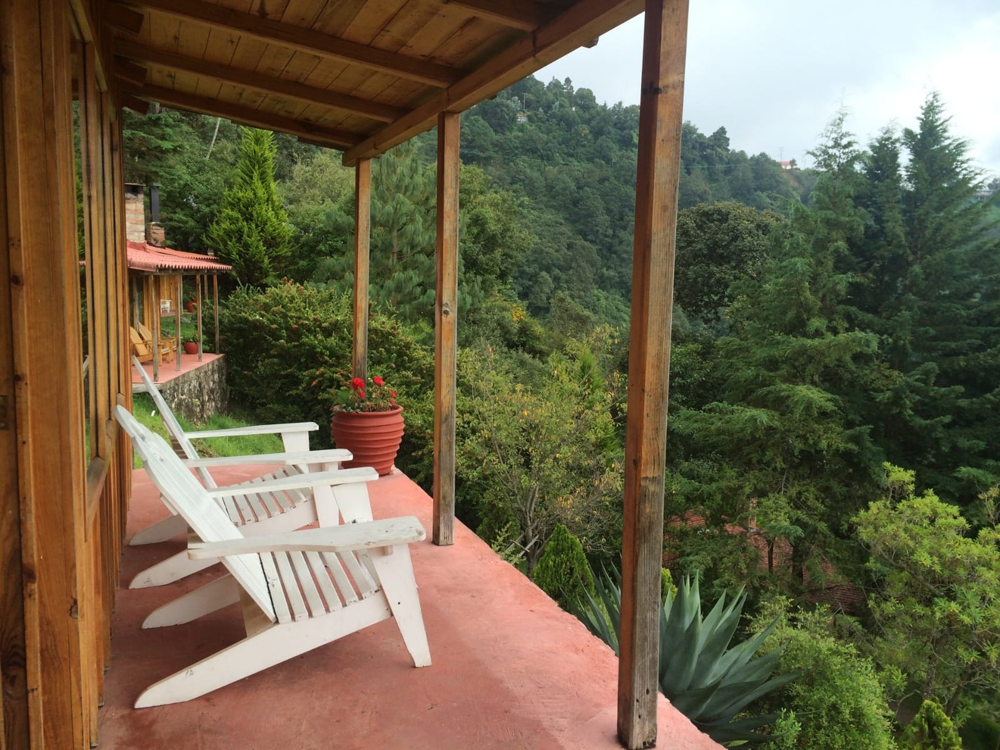
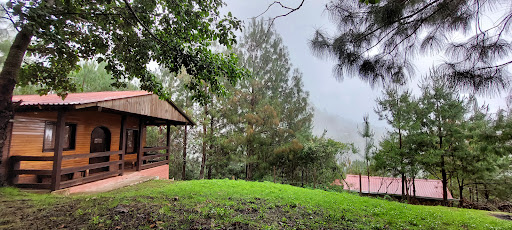
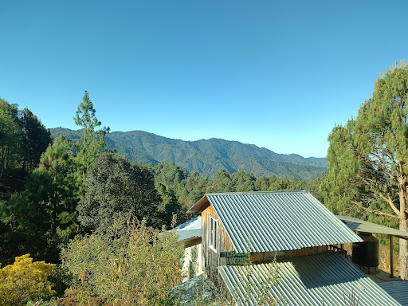
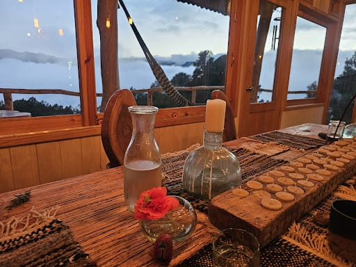

San jose del Pacifico, en oaxaca, ofrece una variedad de hospedajes que se adaptan a diferentes gustos que se adpatan a diferentes gustos y presupuestos
cabañas rancho viejo cabañas comodas con restaurantes y bar, bicicletas gratuitas y vistas a la montaña. calificacion 8.9/10 en booking.com.
mountain Chalet de montaña con jardin, balcon y vistas panoramicas. calificacion de 9.2/10 en booking.com.
cabañas la via lactea cabaña con balcon y vistas a la ciudad, equipada con recepcion 24 horas y wifi gratuito. calificacion de 9.2/10 en booking.com.
puesta de sol Ubicado a 2500 metros sobre el nivel del mar, ofrece vistas panoramicas al oceano pacifico y productos regionales.

hostal mandala hostal con jardin, terraza y restaurante, que tambien dispone de sauna y servicio de habitaciones.
casa chuparrosas alojamiento con jardin, terraza y restaurante, que ofrece servicio de habitacion y guarda equipaje.
